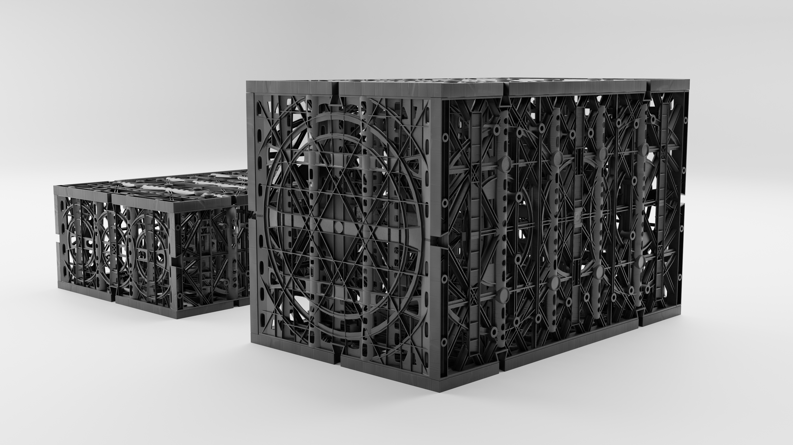
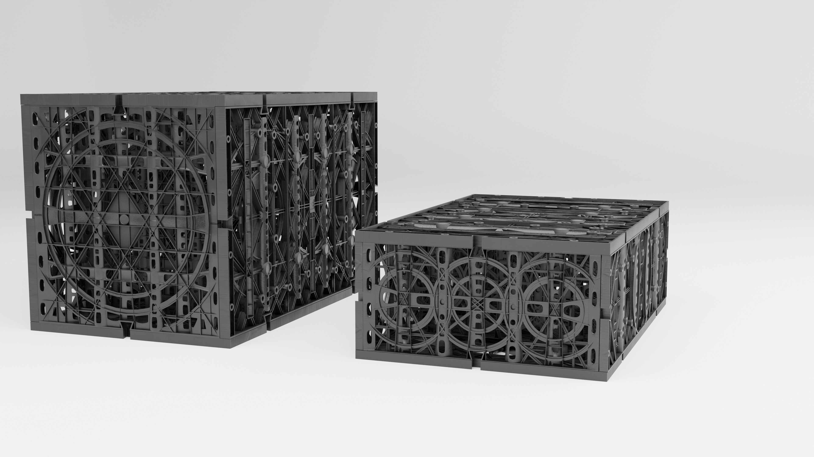
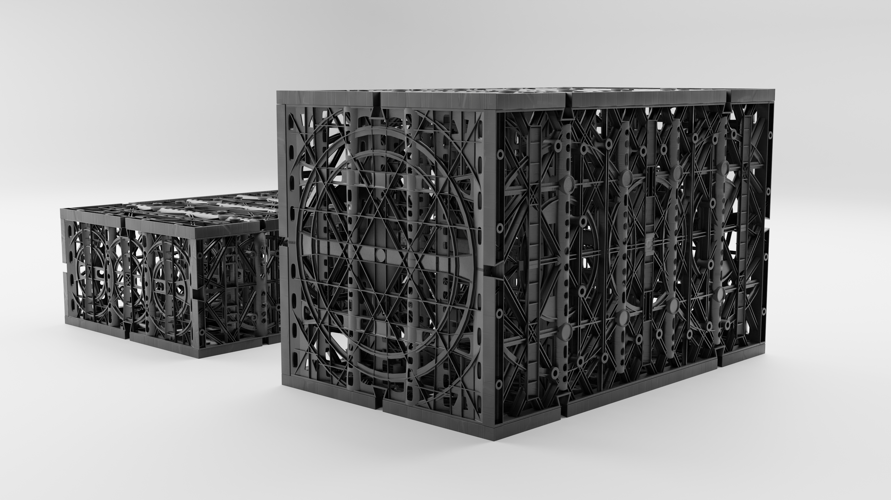
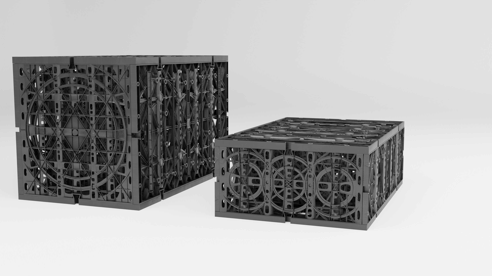
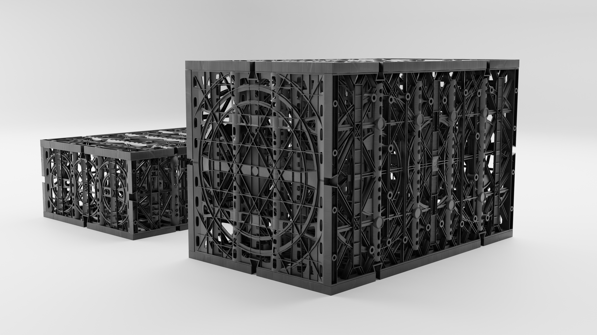
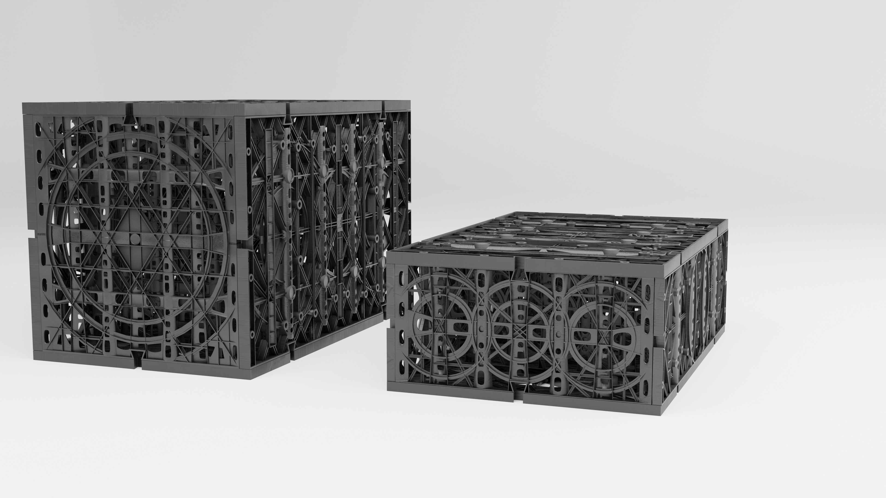

This was an animation made for California Filtration Specialists and Whitson Construction of their modular underground water filtration tanks. This animation was a great opportunity to try using a path following camera rig. I drew a circular path around the tanks and attached the camera to it. The camera is also locked starting at an invisible control object that I can move in order to point the camera while keeping it following the path. Lastly these models were quite high resolution. A-lot of optimization was put into effect in order to make this animation as efficient to render as possible. I'm quite proud of the methods I used to help optimize these complex shapes. Including the usage of the array modifier, which is how I was able to stack each filter without having to create duplicates. The same principal could be applied to crates in a storage facility, or buildings in a city-scape. The animation was rendered in cycles for the best possible lighting simulation, and for use with the procedural plastic material that has bumps, texture and realistic plastic edge-marks.
Design - Whitson Constrution and California Filtration Specialists
Animation - Jordan Cruz
2022

